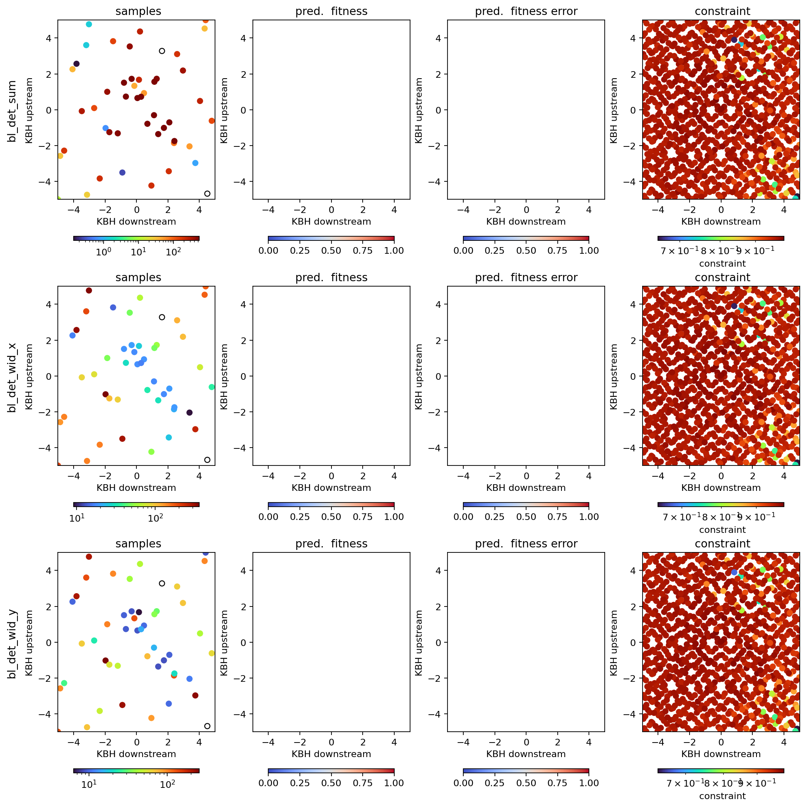

KB Mirrors¶
This example simulates the alignment of a KB mirror endstation (with four degrees of freedom).
[1]:
from blop.utils import prepare_re_env # noqa
%run -i $prepare_re_env.__file__ --db-type=temp
bec.disable_plots()
[2]:
from blop.sim import Beamline
beamline = Beamline(name="bl")
[3]:
from blop import DOF, Agent, Objective
from blop.digestion import beam_stats_digestion
dofs = [
DOF(description="KBV downstream", device=beamline.kbv_dsv, search_domain=(-5.0, 5.0)),
DOF(description="KBV upstream", device=beamline.kbv_usv, search_domain=(-5.0, 5.0)),
DOF(description="KBH downstream", device=beamline.kbh_dsh, search_domain=(-5.0, 5.0)),
DOF(description="KBH upstream", device=beamline.kbh_ush, search_domain=(-5.0, 5.0)),
]
objectives = [
Objective(name="bl_det_sum", target="max", transform="log", trust_domain=(200, np.inf)),
Objective(name="bl_det_wid_x", target="min", transform="log", latent_groups=[("bl_kbh_dsh", "bl_kbh_ush")]),
Objective(name="bl_det_wid_y", target="min", transform="log", latent_groups=[("bl_kbv_dsv", "bl_kbv_usv")]),
]
agent = Agent(
dofs=dofs,
objectives=objectives,
detectors=[beamline.det],
digestion=beam_stats_digestion,
digestion_kwargs={"image_key": "bl_det_image"},
verbose=True,
db=db,
tolerate_acquisition_errors=False,
enforce_all_objectives_valid=True,
train_every=3,
)
(uid,) = RE(agent.learn("qr", n=32))
2025-06-19 02:06:42.050 INFO: Executing plan <generator object Agent.learn at 0x7fb32c0cc6d0>
2025-06-19 02:06:42.052 INFO: Change state on <bluesky.run_engine.RunEngine object at 0x7fb32d10e980> from 'idle' -> 'running'
2025-06-19 02:06:42.054 INFO: running iteration 1 / 1
Transient Scan ID: 1 Time: 2025-06-19 02:06:42
Persistent Unique Scan ID: '6cd9d2af-1c2a-4408-8285-f75334035331'
New stream: 'primary'
+-----------+------------+------------+------------+------------+------------+------------+--------------+--------------+--------------+--------------+
| seq_num | time | bl_kbv_dsv | bl_kbv_usv | bl_kbh_dsh | bl_kbh_ush | bl_det_sum | bl_det_cen_x | bl_det_cen_y | bl_det_wid_x | bl_det_wid_y |
+-----------+------------+------------+------------+------------+------------+------------+--------------+--------------+--------------+--------------+
| 1 | 02:06:42.3 | 2.511 | -3.387 | 1.962 | 0.359 | 156.131 | 167.231 | 84.026 | 36.605 | 17.814 |
| 2 | 02:06:42.4 | 1.348 | -3.868 | 4.203 | -1.508 | 53.676 | 106.290 | 97.408 | 12.967 | 41.351 |
| 3 | 02:06:42.4 | -4.886 | -2.000 | 4.979 | 2.607 | 57.720 | 162.841 | 179.112 | 104.389 | 76.069 |
| 4 | 02:06:42.5 | -1.956 | 1.628 | 2.404 | 3.146 | 406.806 | 213.958 | 199.923 | 116.838 | 41.066 |
| 5 | 02:06:42.5 | -2.995 | 2.640 | 0.281 | 4.872 | 97.286 | 265.308 | 214.923 | 60.132 | 16.068 |
| 6 | 02:06:42.6 | -0.766 | 3.719 | -0.955 | 2.275 | 449.478 | 263.471 | 214.074 | 18.371 | 17.342 |
| 7 | 02:06:42.6 | 3.142 | 3.147 | -4.358 | 3.671 | -1.654 | 196.364 | 164.703 | 360.435 | 246.937 |
| 8 | 02:06:42.7 | 1.827 | 2.293 | -3.328 | 4.445 | 0.288 | 204.366 | 153.467 | 374.514 | 269.667 |
| 9 | 02:06:42.8 | 3.820 | -1.257 | -0.929 | 3.905 | 132.903 | 282.101 | 77.785 | 29.783 | 6.709 |
| 10 | 02:06:42.8 | 1.228 | -2.894 | -1.776 | 3.116 | 216.947 | 292.518 | 101.277 | 11.418 | 48.246 |
| 11 | 02:06:42.9 | 2.461 | -2.365 | 0.333 | 1.445 | 304.161 | 221.049 | 86.309 | 25.983 | 21.818 |
| 12 | 02:06:42.9 | -0.143 | -3.479 | 2.726 | 4.318 | 177.022 | 218.103 | 112.833 | 132.784 | 68.551 |
| 13 | 02:06:43.0 | -2.447 | -4.379 | -0.123 | -0.306 | 78.014 | 195.667 | 142.321 | 39.040 | 121.525 |
| 14 | 02:06:43.0 | -3.811 | -4.248 | 1.109 | -2.544 | 47.951 | 130.649 | 147.596 | 55.042 | 130.309 |
| 15 | 02:06:43.1 | -3.132 | 1.099 | 3.912 | -4.968 | 3.756 | 197.489 | 165.100 | 372.892 | 227.515 |
| 16 | 02:06:43.2 | -1.819 | 4.615 | 3.696 | -3.246 | 3.432 | 207.123 | 151.355 | 376.800 | 236.578 |
| 17 | 02:06:43.2 | -1.217 | -0.254 | 1.518 | -4.260 | 162.070 | 119.536 | 163.355 | 36.645 | 65.672 |
| 18 | 02:06:43.3 | 3.006 | 0.587 | -0.493 | -3.687 | 342.528 | 155.143 | 112.646 | 100.604 | 32.389 |
| 19 | 02:06:43.3 | 1.965 | 3.955 | -2.115 | -4.465 | 167.783 | 171.256 | 179.002 | 129.011 | 66.405 |
| 20 | 02:06:43.4 | 4.277 | 4.750 | 1.617 | -2.057 | 165.755 | 125.680 | 154.975 | 40.566 | 119.026 |
| 21 | 02:06:43.4 | 3.624 | -0.360 | 3.170 | -0.417 | 482.193 | 128.267 | 89.883 | 47.897 | 25.953 |
| 22 | 02:06:43.5 | 4.453 | 1.487 | 2.908 | 2.157 | 339.286 | 183.651 | 110.099 | 104.293 | 64.336 |
| 23 | 02:06:43.6 | 0.597 | 2.975 | 4.406 | 1.056 | 376.504 | 148.472 | 184.664 | 88.466 | 32.412 |
| 24 | 02:06:43.6 | 0.772 | 0.767 | 0.776 | -0.961 | 548.118 | 164.458 | 148.986 | 35.400 | 12.279 |
| 25 | 02:06:43.7 | -4.264 | 2.072 | -1.360 | 0.877 | 145.202 | 243.833 | 209.908 | 40.486 | 25.124 |
| 26 | 02:06:43.7 | -4.439 | 4.161 | -2.573 | -0.856 | -1.860 | 184.000 | 141.411 | 338.000 | 244.679 |
| 27 | 02:06:43.8 | -3.618 | -2.721 | -3.537 | 1.581 | 49.221 | 277.075 | 162.426 | 38.536 | 109.262 |
| 28 | 02:06:43.8 | -1.334 | -1.859 | -3.758 | 0.168 | 233.123 | 254.154 | 141.460 | 79.912 | 98.141 |
| 29 | 02:06:43.9 | -2.505 | -1.021 | -2.250 | -1.715 | 263.806 | 208.679 | 168.241 | 109.842 | 95.182 |
| 30 | 02:06:43.9 | 0.154 | -0.845 | -3.062 | -2.983 | 168.354 | 201.778 | 133.505 | 150.471 | 50.156 |
| 31 | 02:06:44.0 | -0.590 | 0.028 | -4.820 | -2.260 | 212.846 | 222.323 | 158.976 | 137.862 | 48.798 |
| 32 | 02:06:44.1 | 4.894 | -4.986 | -4.565 | -3.766 | 6.208 | 195.835 | 154.856 | 330.136 | 267.951 |
+-----------+------------+------------+------------+------------+------------+------------+--------------+--------------+--------------+--------------+
generator list_scan ['6cd9d2af'] (scan num: 1)
/opt/hostedtoolcache/Python/3.10.17/x64/lib/python3.10/site-packages/botorch/fit.py:215: OptimizationWarning: `scipy_minimize` terminated with status 3, displaying original message from `scipy.optimize.minimize`: ABNORMAL:
result = optimizer(mll, closure=closure, **optimizer_kwargs)
2025-06-19 02:06:46.426 INFO: Change state on <bluesky.run_engine.RunEngine object at 0x7fb32d10e980> from 'running' -> 'idle'
2025-06-19 02:06:46.427 INFO: Cleaned up from plan <generator object Agent.learn at 0x7fb32c0cc6d0>
[4]:
RE(agent.learn("qei", n=4, iterations=4))
2025-06-19 02:06:46.434 INFO: Executing plan <generator object Agent.learn at 0x7fb328bf3140>
2025-06-19 02:06:46.436 INFO: Change state on <bluesky.run_engine.RunEngine object at 0x7fb32d10e980> from 'idle' -> 'running'
2025-06-19 02:06:46.437 INFO: running iteration 1 / 4
Transient Scan ID: 2 Time: 2025-06-19 02:06:47
Persistent Unique Scan ID: '773fa947-ff83-488a-b13e-5e22ee107992'
New stream: 'primary'
+-----------+------------+------------+------------+------------+------------+------------+--------------+--------------+--------------+--------------+
| seq_num | time | bl_kbv_dsv | bl_kbv_usv | bl_kbh_dsh | bl_kbh_ush | bl_det_sum | bl_det_cen_x | bl_det_cen_y | bl_det_wid_x | bl_det_wid_y |
+-----------+------------+------------+------------+------------+------------+------------+--------------+--------------+--------------+--------------+
| 1 | 02:06:47.7 | 1.522 | 0.537 | -0.276 | 1.066 | 549.628 | 225.921 | 134.059 | 17.308 | 8.776 |
| 2 | 02:06:47.8 | 0.836 | 0.916 | -0.130 | 1.095 | 551.111 | 223.431 | 150.113 | 16.393 | 10.182 |
| 3 | 02:06:47.8 | 0.654 | 0.632 | 1.835 | -0.660 | 552.998 | 149.076 | 148.569 | 17.266 | 16.432 |
| 4 | 02:06:47.9 | 1.122 | 2.599 | 2.397 | 1.637 | 504.901 | 183.848 | 171.051 | 79.789 | 34.657 |
+-----------+------------+------------+------------+------------+------------+------------+--------------+--------------+--------------+--------------+
generator list_scan ['773fa947'] (scan num: 2)
2025-06-19 02:06:49.357 INFO: running iteration 2 / 4
Transient Scan ID: 3 Time: 2025-06-19 02:06:50
Persistent Unique Scan ID: '0826dc51-7f1b-456b-a8c7-0bcbf3332951'
New stream: 'primary'
+-----------+------------+------------+------------+------------+------------+------------+--------------+--------------+--------------+--------------+
| seq_num | time | bl_kbv_dsv | bl_kbv_usv | bl_kbh_dsh | bl_kbh_ush | bl_det_sum | bl_det_cen_x | bl_det_cen_y | bl_det_wid_x | bl_det_wid_y |
+-----------+------------+------------+------------+------------+------------+------------+--------------+--------------+--------------+--------------+
| 1 | 02:06:50.7 | 1.969 | 1.170 | 2.008 | -1.131 | 543.691 | 136.479 | 137.033 | 16.617 | 24.187 |
| 2 | 02:06:50.7 | 1.778 | 1.650 | 1.650 | 1.235 | 535.666 | 190.714 | 147.042 | 52.475 | 29.431 |
| 3 | 02:06:50.8 | 1.618 | 0.438 | 0.349 | 0.798 | 542.813 | 208.000 | 131.285 | 16.900 | 9.004 |
| 4 | 02:06:50.8 | 1.448 | 0.616 | -0.427 | 1.549 | 551.064 | 238.500 | 136.585 | 16.478 | 9.129 |
+-----------+------------+------------+------------+------------+------------+------------+--------------+--------------+--------------+--------------+
generator list_scan ['0826dc51'] (scan num: 3)
2025-06-19 02:06:52.000 INFO: running iteration 3 / 4
Transient Scan ID: 4 Time: 2025-06-19 02:06:53
Persistent Unique Scan ID: 'f2428fce-159b-434a-b011-aa7317641a3f'
New stream: 'primary'
+-----------+------------+------------+------------+------------+------------+------------+--------------+--------------+--------------+--------------+
| seq_num | time | bl_kbv_dsv | bl_kbv_usv | bl_kbh_dsh | bl_kbh_ush | bl_det_sum | bl_det_cen_x | bl_det_cen_y | bl_det_wid_x | bl_det_wid_y |
+-----------+------------+------------+------------+------------+------------+------------+--------------+--------------+--------------+--------------+
| 1 | 02:06:53.6 | 0.199 | 0.783 | 1.237 | 0.331 | 551.426 | 180.928 | 157.578 | 22.422 | 21.721 |
| 2 | 02:06:53.7 | 0.833 | 1.028 | 2.331 | 0.778 | 544.730 | 168.000 | 151.990 | 57.575 | 8.847 |
| 3 | 02:06:53.7 | 0.396 | 1.828 | 0.043 | 1.019 | 549.310 | 218.500 | 170.500 | 16.367 | 9.687 |
| 4 | 02:06:53.8 | 2.612 | -0.833 | -2.030 | 3.136 | 181.975 | 295.555 | 97.500 | 6.124 | 9.275 |
+-----------+------------+------------+------------+------------+------------+------------+--------------+--------------+--------------+--------------+
generator list_scan ['f2428fce'] (scan num: 4)
2025-06-19 02:06:54.982 INFO: running iteration 4 / 4
Transient Scan ID: 5 Time: 2025-06-19 02:06:56
Persistent Unique Scan ID: 'ae0f707e-6ee4-456a-90c6-bead2b9dfcd1'
New stream: 'primary'
+-----------+------------+------------+------------+------------+------------+------------+--------------+--------------+--------------+--------------+
| seq_num | time | bl_kbv_dsv | bl_kbv_usv | bl_kbh_dsh | bl_kbh_ush | bl_det_sum | bl_det_cen_x | bl_det_cen_y | bl_det_wid_x | bl_det_wid_y |
+-----------+------------+------------+------------+------------+------------+------------+--------------+--------------+--------------+--------------+
| 1 | 02:06:56.0 | 1.264 | 0.966 | 0.426 | -0.190 | 550.992 | 186.833 | 144.514 | 25.778 | 9.680 |
| 2 | 02:06:56.1 | 0.927 | 1.510 | 2.117 | 0.494 | 544.654 | 166.591 | 157.894 | 45.464 | 12.148 |
| 3 | 02:06:56.1 | 0.834 | 1.065 | 1.377 | 0.142 | 553.424 | 174.377 | 152.474 | 21.179 | 9.411 |
| 4 | 02:06:56.2 | 3.588 | -1.833 | 4.139 | -3.603 | 3.873 | 214.944 | 164.006 | 337.549 | 255.116 |
+-----------+------------+------------+------------+------------+------------+------------+--------------+--------------+--------------+--------------+
generator list_scan ['ae0f707e'] (scan num: 5)
/opt/hostedtoolcache/Python/3.10.17/x64/lib/python3.10/site-packages/botorch/fit.py:215: OptimizationWarning: `scipy_minimize` terminated with status 3, displaying original message from `scipy.optimize.minimize`: ABNORMAL:
result = optimizer(mll, closure=closure, **optimizer_kwargs)
2025-06-19 02:06:57.616 INFO: Change state on <bluesky.run_engine.RunEngine object at 0x7fb32d10e980> from 'running' -> 'idle'
2025-06-19 02:06:57.617 INFO: Cleaned up from plan <generator object Agent.learn at 0x7fb328bf3140>
[4]:
('773fa947-ff83-488a-b13e-5e22ee107992',
'0826dc51-7f1b-456b-a8c7-0bcbf3332951',
'f2428fce-159b-434a-b011-aa7317641a3f',
'ae0f707e-6ee4-456a-90c6-bead2b9dfcd1')
[5]:
plt.imshow(agent.best.bl_det_image)
[5]:
<matplotlib.image.AxesImage at 0x7fb32878fd00>

[6]:
agent.plot_objectives(axes=(2, 3))
